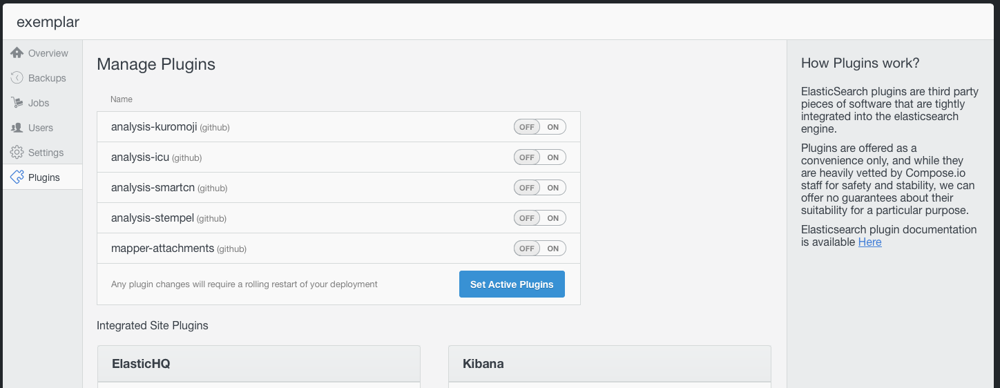

Elasticsearch Plugins are go
We’ve just activated the first plugins in the Compose Elasticsearch databases. We mentioned last week that they were coming and our engineering teams delighted us today by confirming they are ready for wider consumption.
So what have we enabled? If you go to your Elasticsearch dashboard, you will find that when you select the “Plugins” tab, as well as the site plugins for ElasticHQ and Kibana, there’s now a list of, currently six, Elasticsearch plugins.
The plugins we’ve enabled so far are:
- analysis-kuromoji – integrates the Lucene kuromji analysis module to allow for Japanese language indexing and searching.
- analysis-smartcn – integrates Lucene’s Smart Chinese analysis module to enable Chinese language analysis.
- analyis-stempl – integatates the Polish analysis module from Lucene for better Polish indexing and searching.
- analysis-icu – integrates the Lucene ICU (International Components for Unicode) module to greatly enhance the capabilities of Java, and therefore Elasticsearch, in working with Unicode and internationalized text.
- mapper-attachments – Adds an attachment type to Elasticsearch. The attachment is encoded as base64 but can be indexed using Apache Tika, a multi-file-format analysis module for metadata and content of a wide variety of common formats.
To activate any plugin, just toggle the on/off switch and then click Save Active Plugins. Consult the documentation for each plugin to get the details of how to put its abilities into action.
This is the first tranche of plugins we’re making available. If there is a particular plugin that you need, let us know and we will move it to up the queue of plugins we’re vetting for security and stability. We won’t, as previously explained, be enabling script plugins at this time because of security issues. We also have no plans to enable river plugins because of stability issues.